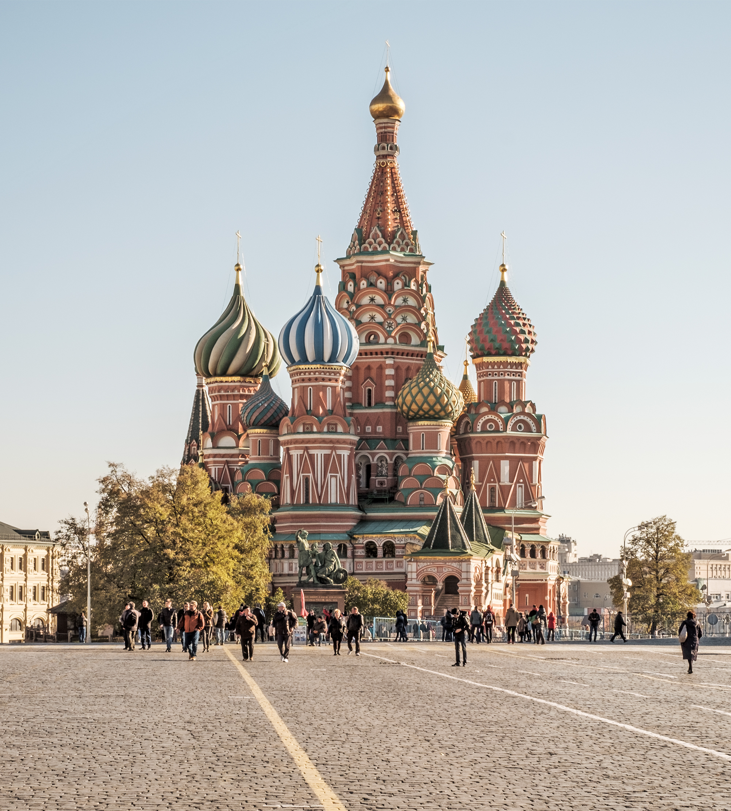

Собор Василия Блаженного, Москва
Покровский собор на Рву

Общие сведения
Православный храм на Красной площади в Москве, памятник русской архитектуры XVI века. Собор построен в 1555–1561 годах по приказу Ивана Грозного в память о взятии Казани. Согласно преданию, авторами были русские зодчие Барма и Постник.
Особенности
- девять церквей на общем основании, восемь из них окружают центральную;
- центральный шатровый храм Покрова имеет высоту около 65 метров;
- каждая глава отличается формой и узором;
- современное название связано с юродивым Василием Блаженным, погребённым рядом, к чьей могиле позже был пристроен придел (1588).
Основные даты
- 1555 — начало строительства;
- 1561 — освящение собора;
- 1588 — пристроен придел Василия Блаженного;
- 1918 — собор становится музеем;
- 1990 — включён в список Всемирного наследия ЮНЕСКО.
Краткие параметры
- Город
- Москва
- Годы постройки
- 1555–1561
- Высота
- около 65 м
- Стиль
- московская архитектура XVI века